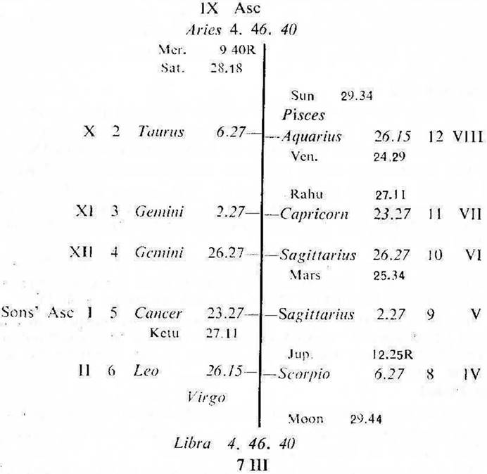
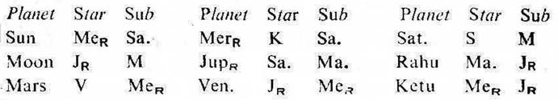

Question. Will my son get success at the examination in M.B.B.S. ?
Number. 5 (out of 249)
Place of Judgment. 23°N 2′, 72°E 35′
Time of judgment 13-4-1971, Tuesday; 6-12-0 P.M. I.S.T.


If the sub lord of the 4th cusp is the significator of 4, 9 or 11, the success in examination is promised, when at the time of examination (i. e. during the days of examination) the joint period of the significators of 4, 9 and 11 is current.
In this horary map the father put the query about his son. So consider the 5th cusp as the son's Asc. and proceed. For convenience the roman letter is given to each house counted from the 5th cusp.
Moon is in the star Jupiter in IV. So it is the significator of IV (examinations). Moon is aspected by Mercury owning XI (success) and occupying IX (higher studies). Thus Moon clearly indicates that the query refers to the examination results of the querent's son.
Cusp IV. The sub lord of IV cusp is Mercury. It is in IX and retrograde. It is in the star Ketu in I and in the sub Saturn in IX. So Mercury is the significator of I and connected with IX.
The examination of the querent's son commenced on 12-4-1971 and it is to continue upto 23-4-1971. The cuspal sub lord of IV (Mercury) remains in retrograde motion during these days. So the querent's son will not get success in the examination for the time being.
Cusp XI. The sub lord of XI cusp is Ketu. It is in the star Mercury owning XI and occupying IX. It is in the sub Jupiter in IV. So it is the significator of IX, XI and connected with IV.
But both the star lord and the sub lord of this cuspal sub lord remain in retrograde motion during the days of the examination. So the querent's son will not get success in the examination for the time being.
At the time of judgment and during the days of the examination (Jupiter Dasha balance 4Y 3M 25D) the querent's son is running the joint period of Jupiter, Moon and Rahu.
All these three planets are the significators of IV, IX and XI. But Jupiter the period ruler, Jupiter the star lord of the sub period ruler (Moon) and Jupiter the sub lord of the interperiod ruler (Rahu) remains in retrograde motion during the days of the examination. So the querent's son will not get success in the examination for the time being.
Thus, in this case the point of retrogradation comes in the way of success in the examination at every stage.
The results of the examination were declared on 27-5-1971 and unluckily the querent's son failed in the M.B.B.S. examination.